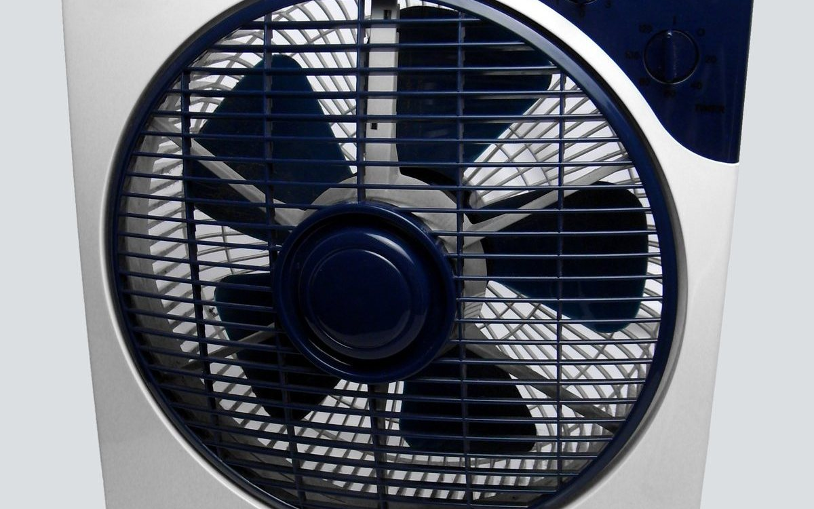

Ventilador fraco, travando ou fazendo barulho: como limpar as peças e o eixo com segurança

No calor, poucas coisas são mais frustrantes do que ligar o ventilador e perceber que ele gira pesado, faz barulho estridente ou quase não sopra vento. Na grande maioria dos casos, o motor não queimou: são camadas densas de poeira e fios de cabelo enrolados no eixo que travam a rotação mecânica e sobrecarregam o aparelho.
1. O que você vai aprender neste guia
- Como desligar e manusear o ventilador sem qualquer perigo elétrico.
- Como destravar as presilhas da grade e soltar a porca da hélice (que tem rosca invertida!).
- Como lavar grades e pás sem deformar o plástico e sem molhar a carcaça do motor.
- Como inspecionar e remover fios e fiapos enrolados no eixo de aço.
- O que nunca passar no eixo (o perigo de usar óleo de cozinha ou desengripantes errados).
2. Alertas de segurança cruciais
TIRE DA TOMADA ANTES DE TOCAR: nunca tente limpar as pás ou a grade com o plugue conectado à tomada, mesmo se o botão estiver na posição desligado. Um acionamento acidental pode ferir os dedos com gravidade.
NUNCA MOLHE O MOTOR NEM OS BOTÕES: apenas as grades plásticas e a hélice podem ser lavadas em água corrente. A cabeça do motor, cabos de força e botões devem ser limpos unicamente a seco ou com pano levemente úmido.
Cuidado com motor zunindo sem girar: se você ligar o ventilador na tomada e ouvir um zumbido ("hummm") com as pás paradas e sentir cheiro de queimado ou carcaça quente, desligue imediatamente da tomada: o motor está bloqueado ou o capacitor pifou, havendo risco de superaquecimento e curto-circuito.
3. Materiais e ferramentas necessários
- Pano de microfibra seco e esponja de louça macia.
- Detergente neutro para lavar grades e hélices na torneira.
- Chave de fenda fina (para soltar eventuais travas ou parafusinho de segurança da grade).
- Pincel de cerdas médias secas ou uma escovinha de dentes velha para espanar o eixo.
- Pinça ou tesoura de ponta fina para cortar cabelos enrolados no eixo de metal.
4. O teste do giro manual
Com o ventilador fora da tomada, tente empurrar a hélice suavemente com o dedo:
- A hélice gira macia e dá várias voltas livres: o problema é puramente aerodinâmico (sujeira acumulada nas bordas de ataque das pás que corta a vazão de vento) ou elétrico (capacitor fraco).
- A hélice para quase de imediato, gira pesada ou range: há cabelos e pó grudados no eixo entre a hélice e a bucha do motor, freando o movimento mecânico.
5. Passo a passo para desmontar e limpar
- Tire o plugue da tomada: certifique-se de que o aparelho está totalmente desenergizado.
- Abra as presilhas da grade frontal: a maioria dos modelos modernos (Mondial, Britânia, Arno, Mallory, Philco) possui 4 a 6 presilhas plásticas nas bordas. Pressione as travas com os dedos ou com a ponta de uma chave de fenda com cuidado para desencaixar a grade frontal.
- Retire a porca da hélice (ATENÇÃO À ROSCA INVERTIDA): o miolo central que prende a hélice possui rosca contrária para não se soltar com o vento. Para soltar, segure a hélice com uma mão e gire a porca plástica central no sentido horário (sentido de apertar parafusos comuns).
- Puxe a hélice para frente: deslize a hélice para fora do eixo. Se estiver travada, balance suavemente de um lado para o outro sem forçar a ponta do eixo.
- Lave as partes plásticas: leve a grade frontal e a hélice para o tanque. Lave com água morna, esponja macia e detergente neutro para remover a gordura e fuligem que grudam nas pás. Deixe secar completamente à sombra.
- Limpe o eixo do motor: com a hélice fora, olhe para a haste de metal saindo do motor. Use uma pinça para puxar os fios de cabelo e fiapos de tecido enrolados rente à bucha frontal. Espane com um pincel seco para remover toda a poeira solta.
- Seque bem e monte na ordem inversa: certifique-se de que a hélice e as grades estejam 100% secas. Alinhe o chanfro da hélice com o pino de trava do eixo, encaixe a porca central girando no sentido anti-horário para dar aperto firme e trave as presilhas da grade frontal.
6. Erros comuns para nunca cometer
- Passar óleo de cozinha no eixo: o óleo vegetal oxida rapidamente em contato com o ar e o calor do motor, transformando-se em uma cola espessa que funde o eixo com a bucha de bronze em menos de duas semanas.
- Aplicar sprays desengripantes no enrolamento elétrico: solventes voláteis derretem o verniz isolante dos fios de cobre do estator, provocando curto-circuito ao ligar.
- Ligar o ventilador sem a grade protetora: as pontas das pás girando em alta velocidade causam cortes profundos em animais domésticos e pessoas desavisadas. Nunca teste o motor com a hélice desprotegida.
7. Quando parar e chamar assistência ou substituir
Pare e procure uma oficina de eletroportáteis quando:
- O eixo tiver folga lateral excessiva (balançando para cima e para baixo), o que significa que a bucha de bronze gastou ovalada e o rotor está colidindo no estator.
- O ventilador só começar a girar se você der um empurrão manual (sinal clássico de capacitor permanente estufado ou esgotado).
- Houver cheiro forte de queimado, fumaça ou fio chamuscado.
- O motor estiver travado de modo rígido sem girar nem mesmo com alicate (motor engripado por calor excessivo).
8. Prevenção e conservação
- Faça a limpeza superficial da grade a cada 15 dias usando um aspirador de pó ou pincel seco para não deixar a poeira compactar na hélice.
- Em épocas de frio ou estiagem em que o ventilador não for utilizado, guarde-o coberto com um saco plástico limpo para não absorver a poeira do armário.
Ventiladores e equipamentos para o seu conforto
Transparência: Se o seu ventilador antigo já completou seu ciclo de vida ou se você precisa de ferramentas para limpeza precisa, confira as opções recomendadas no Mercado Livre (links de afiliado).
Ventilador de Mesa 30cm Super Power Mondial 60W VSP-30-B
Silencioso, econômico e fácil de desmontar para limpeza periódica com grade aerodinâmica de alta vazão.
Mini Soprador de Ar Portátil Turbo USB Recarregável
Jato de ar potente ideal para expulsar poeira de aletas, motores de eletrodomésticos, teclados e frestas de difícil acesso.
Buscando comparar modelos de ventiladores e eletroportáteis silenciosos para a sua casa? Veja os comparativos completos no nosso parceiro Achado Reviews: Melhores Eletrodomésticos até R$ 120 (Ventiladores, Liquidificadores e Portáteis) e o guia Melhor Aspirador de Pó e Água Custo-Benefício.
9. Fontes e referências consultadas
- Portaria INMETRO nº 20/2012 e Portaria nº 299/2014: Requisitos de avaliação da conformidade e eficiência energética de ventiladores de mesa, parede e coluna.
- Manuais de Instrução e Conservação de Ventiladores Residenciais (Mondial, Arno, Britânia): Instruções sobre desmontagem de grades, sentido de aperto de porcas e limpeza segura de componentes plásticos.